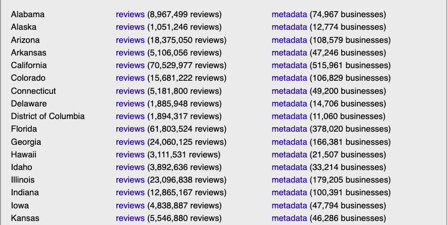
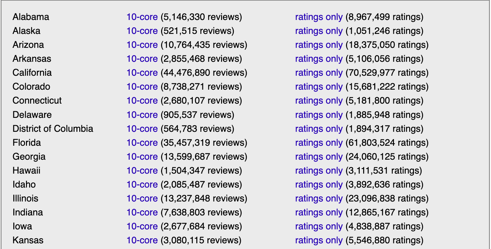

一、数据介绍
该数据集从谷歌地图采集了美国范围内一些信息(截止日期为 2021 年 9 月)，数据规模
- 666,324,103 条评论（评级、文本、图片等）
- 113,643,107 位用户信息
- 4,963,111 条企业元数据（地址、地理信息、描述、类别信息、价格、营业时间和其他信息）
数据集地址 https://datarepo.eng.ucsd.edu/mcauley_group/gdrive/googlelocal/
1.1 完整评论数据
请仅在确实需要时下载这些（大！）文件。我们建议使用较小的数据集（即 k-core 和 CSV 文件），如下一节所示。

……
1.2 小的评论数据
如果您要在课堂项目（或类似项目）中使用这些数据，请考虑在申请大文件之前使用下面这些较小的数据集。
10-cores 经过缩减，以剩下的每个用户和每个项目都有 10 条评论。
ratings only：这些数据集不包含元数据或评论，只有（企业、用户、评分、时间戳）元组。因此，它们适合与 mymedialite（或类似）软件包一起使用。
您可以直接下载以下按类别划分的较小数据集。

二、数据格式
格式为 json 格式的每行一篇评论。如需进一步帮助阅读数据，请参阅下面的示例。
2.1 评论样本
{
'user_id': '106533466896145407182',
'name': 'Amy VG',
'time': 1568748357166,
'rating': 5,
'text': "I can't say I've ever been excited about a dentist visit before, but there's a first for everything! Loved my experience at Lush today. Every person in the office was friendly and personable- plus the office itself is gorgeous! Great experience, I highly recommend!",
'pics': [
{
'url': ['https://lh5.googleusercontent.com/p/AF1QipMBzN4BJV9YCObcw_ifNzFPm-u38hO3oimOA8Fb=w150-h150-k-no-p']
},
{
'url': ['https://lh5.googleusercontent.com/p/AF1QipNS1PEXEvadfUlhRkRDJ09id
Mxh3CveZGZYuTo5=w150-h150-k-no-p']
}
],
'resp': {
'time': 1568770503975,
'text': 'We love getting to meet new patients like yourself. Thanks for giving our office a chance to take care of your dental needs and thanks for the nice review!'
},
'gmap_id': '0x87ec2394c2cd9d2d:0xd1119cfbee0da6f3'
}
{
'user_id': '101463350189962023774',
'name': 'Jordan Adams',
'time': 1627750414677,
'rating': 5,
'text': 'Cool place, great people, awesome dentist!',
'pics': [
{
'url': ['https://lh5.googleusercontent.com/p/AF1QipNq2nZC5TH4_M7h5xRAd
61hoTgvY1o9lozABguI=w150-h150-k-no-p']
}
],
'resp': {
'time': 1628455067818,
'text': 'Thank you for your five-star review! -Dr. Blake'
},
'gmap_id': '0x87ec2394c2cd9d2d:0xd1119cfbee0da6f3'
}
其中
user_id - 审稿人的 ID
name - 审阅人姓名
time - 审核时间（UNIX 时间）
rating - 企业评级
text - 评论的文字
pics - 评论的图片
resp - 企业对评论的回复，包括 unix 时间和回复文本
gmap_id - 企业 ID
2.2 元数据样本
{
'name': 'Walgreens Pharmacy',
'address': 'Walgreens Pharmacy, 124 E North St, Kendallville, IN 46755',
'gmap_id': '0x881614ce7c13acbb:0x5c7b18bbf6ec4f7e',
'description': 'Department of the Walgreens chain providing prescription medications & other health-related items.',
'latitude': 41.451859999999996,
'longitude': -85.2666757,
'category': ['Pharmacy'],
'avg_rating': 4.2,
'num_of_reviews': 5,
'price': '$$',
'hours': [['Thursday', '8AM–1:30PM'], ['Friday', '8AM–1:30PM'], ['Saturday', '9AM–1:30PM'], ['Sunday', '10AM–1:30PM'], ['Monday', '8AM–1:30PM'], ['Tuesday', '8AM–1:30PM'], ['Wednesday', '8AM–1:30PM']],
'MISC': {
'Service options': ['Curbside pickup', 'Drive-through', 'In-store pickup', 'In-store shopping'],
'Health & safety': ['Mask required', 'Staff wear masks', 'Staff get temperature checks'],
'Accessibility': ['Wheelchair accessible entrance', 'Wheelchair accessible parking lot'],
'Planning': ['Quick visit'],
'Payments': ['Checks', 'Debit cards']
},
'state': 'Closes soon ⋅ 1:30PM ⋅ Reopens 2PM',
'relative_results': ['0x881614cd49e4fa33:0x2d507c24ff4f1c74', '0x8816145bf5141c89:0x535c1d605109f94b', '0x881614cda24cc591:0xca426e3a9b826432', '0x88162894d98b91ef:0xd139b34de70d3e03', '0x881615400b5e57f9:0xc56d17dbe420a67f'],
'url': 'https://www.google.com/maps/place//data=!4m2!3m1!1s0x881614ce7c13acb
b:0x5c7b18bbf6ec4f7e?authuser=-1&hl=en&gl=us'
}
其中
name - 企业名称
address - 企业地址
gmap_id - 企业 ID
description - 企业描述
latitude - 企业的纬度
longitude - 企业的经度
category - 企业类别
avg_rating - 企业的平均评分
num_of_reviews - 评价数量
price - 商店的价格
hours - 营业时间
MISC - 其他信息
state - 企业的当前状态（例如，永久关闭）
relative_results - 谷歌推荐的相关企业
url - 企业的 URL
三、获取数据集
数据集地址 https://datarepo.eng.ucsd.edu/mcauley_group/gdrive/googlelocal/
3.1 引用
如果您以任何方式使用这些数据，请引用以下论文：
Li, Jiacheng, Jingbo Shang, and Julian McAuley. “Uctopic: Unsupervised contrastive learning for phrase representations and topic mining.” arXiv preprint arXiv:2202.13469 (2022).
Yan, An, Zhankui He, Jiacheng Li, Tianyang Zhang, and Julian McAuley. “Personalized Showcases: Generating multi-modal explanations for recommendations.” In Proceedings of the 46th International ACM SIGIR Conference on Research and Development in Information Retrieval, pp. 2251-2255. 2023.
3.2 联系方式
Jiacheng Li (j9li@eng.ucsd.edu)